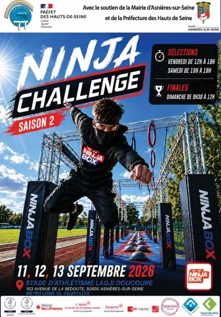
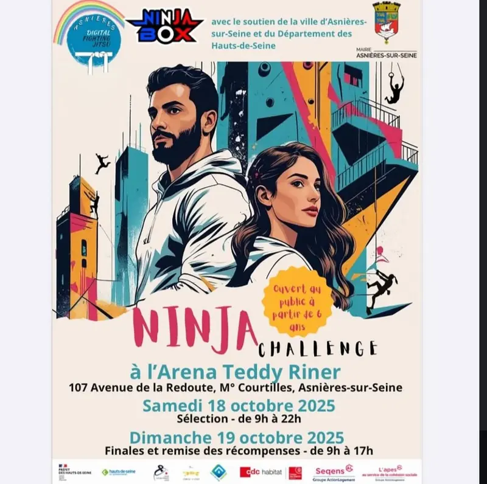

Accueil › Ninja Challenge & événements
Ninja Challenge & événements
Le sport qui rassemble : parcours ninja, Sport Inclusion, Les Victoires… des rendez-vous ouverts à toutes et à tous.
Ninja Challenge
Un parcours de ninja, des sélections, des finales : un grand rendez-vous sportif et festif, dédié à l'inclusion par le sport, organisé avec nos partenaires. Ouvert au public dès 6 ans (règle de la saison 1).
Compte à rebours en cours de chargement…

Octobre 2025 : le premier Ninja Challenge
Les 18 et 19 octobre 2025, l'Arena Teddy Riner accueillait la première édition : sélections le samedi de 9h à 22h, puis finales et remise des récompenses le dimanche de 9h à 17h, ouvertes à partir de 6 ans, avec le soutien de la Ville d'Asnières-sur-Seine et du Département des Hauts-de-Seine, et le parcours Ninja Box.
Résultats, fréquentation et photos de cette édition : à ajouter par le club (data/events.json et galerie).

De Sport Inclusion au Ninja Challenge
Chaque édition a rassemblé un peu plus de monde autour d'une idée simple : le sport est pour tout le monde.
Sport Inclusion, Les Victoires, stages
Le sport, c'est aussi une école de vie
Le club organise des séances d'échanges avec des personnalités du monde sportif ou d'autres domaines, de concentration collective, de séminaires, de maîtrise des conflits, d'affirmation de soi, de leadership et d'aide à l'intégration dans la société.